분야·담당·대표 경험이 명확하고 문장도 화면 안에 들어옵니다.
작업
제목을 두 줄로 나누는 것은 선택 사항입니다. 전체 방향을 다시 바꿀 필요는 없습니다.
구성은 유지하되 남은 수정이 필요합니다. 2페이지 주요성과는 검토에서 제외했습니다.
이미지를 클릭하면 원본을 크게 볼 수 있습니다. 문구 교체와 원자료 수정·재캡처를 구분했습니다.
전체 검토 원고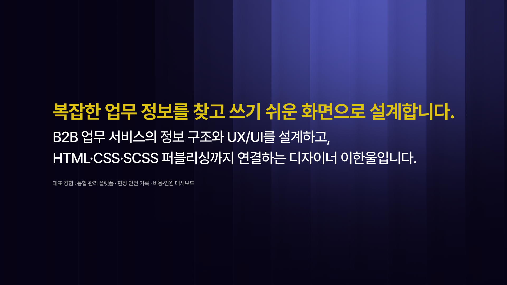
분야·담당·대표 경험이 명확하고 문장도 화면 안에 들어옵니다.
작업
제목을 두 줄로 나누는 것은 선택 사항입니다. 전체 방향을 다시 바꿀 필요는 없습니다.
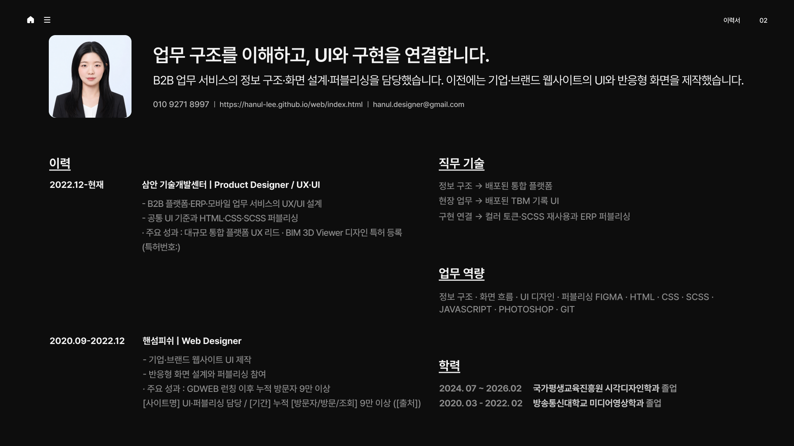
회사별 담당 업무와 직무 기술은 정리됐습니다. 주요성과·특허번호·GDWEB 관련 문구는 사용자 요청대로 검토·수정 범위에서 제외했습니다.
작업
업무 역량에서 ‘퍼블리싱 FIGMA’를 ‘퍼블리싱 · Figma’로 구분하면 읽기 쉽습니다. 학력 표기는 증명서의 학위·전공·수여기관과 대조하되 현재 자료만으로 오류라고 판단하지 않습니다.
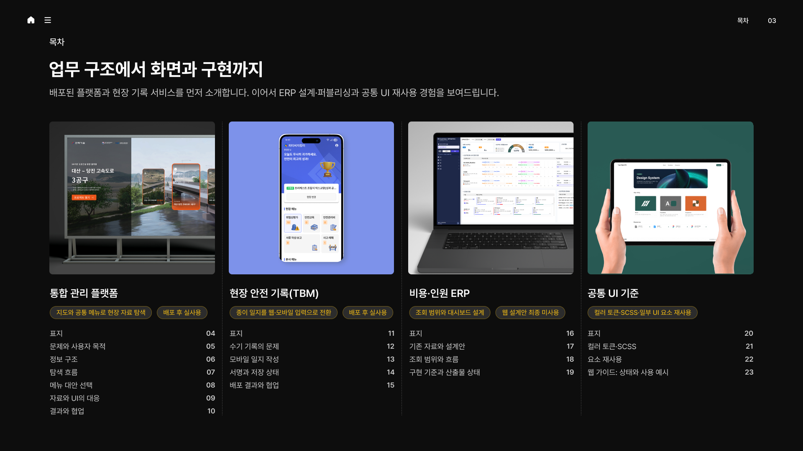
대표 4개 프로젝트의 순서와 페이지 범위는 맞습니다. 24·25·26쪽 안내가 목차에 빠졌습니다.
작업
네 카드 아래 짧은 추가 행을 넣습니다.
추가 경험 24 · 모바일 인트라넷 — 팀 내부 설계·퍼블리싱 25 · 개인 칸반 프로토타입 — 카드 이동·작업 생성 26 · 연락처
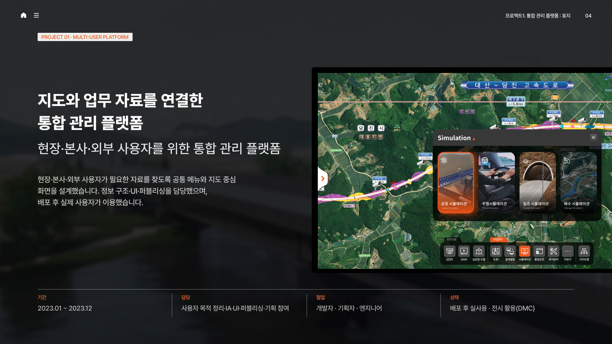
담당·협업·배포 후 실사용을 명시했습니다. 오른쪽 화면이 페이지 경계에서 잘리지만 다음 상세 페이지가 있어 내용 오류는 아닙니다.
작업
전체 화면을 보여주는 표지라면 이미지 폭을 줄여 페이지 안에 넣습니다. DMC 표기는 행사명·연도가 실제 자료로 확인될 때만 풀어 씁니다.
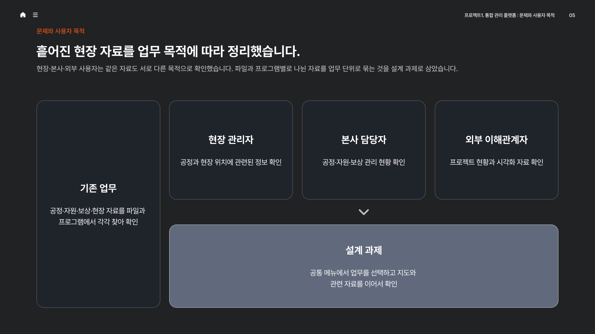
기존 업무·사용자 3종·설계 과제가 분리됐고 제목과 설명이 같은 내용을 말합니다.
작업
새 인터뷰나 효과 수치를 추가할 필요 없습니다.
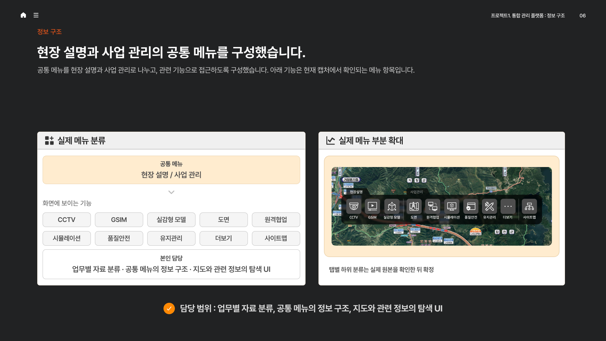
큰 제목이 ‘구성했…’에서 잘립니다. 오른쪽 아래 ‘탭별 하위 분류는 실제 원본을 확인한 뒤 확정’은 제출 원고가 아닌 편집 지시입니다.
작업
제목을 줄이거나 두 줄로 배치하고 편집 지시를 아래 캡션으로 교체합니다. 하단 담당 범위와 카드 내부의 반복 문구는 하나만 남겨도 됩니다.
제목: 현장 설명·사업 관리의 공통 메뉴를 구성했습니다. 오른쪽 캡션: 실제 화면의 공통 메뉴와 기능 진입점 설명: 공통 메뉴를 현장 설명과 사업 관리로 나누고 관련 기능에 접근하도록 구성했습니다. 아래는 실제 화면에서 확인되는 메뉴 항목입니다.
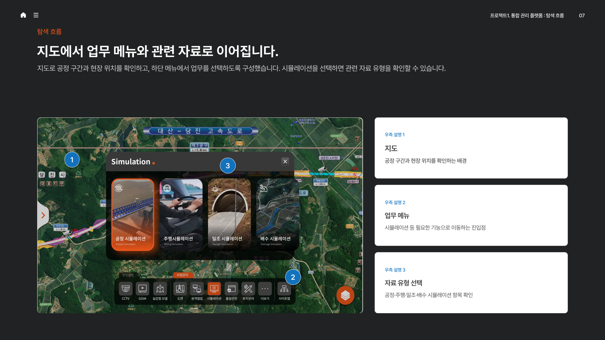
지도·업무 메뉴·자료 유형 선택과 실제 1·2·3 표시가 대응합니다.
작업
‘우측 설명 1/2/3’을 ‘1 지도 / 2 업무 메뉴 / 3 자료 유형 선택’으로 바꿔 제출 문구로 정리합니다.

세 대안과 선택 이유가 연결됩니다. 메뉴 구성·선택 상태가 다른 비교이며 통제 실험이 아니라는 범위도 밝혔습니다.
작업
정량 가독성 평가나 사용성 개선 수치를 추가하지 않습니다.
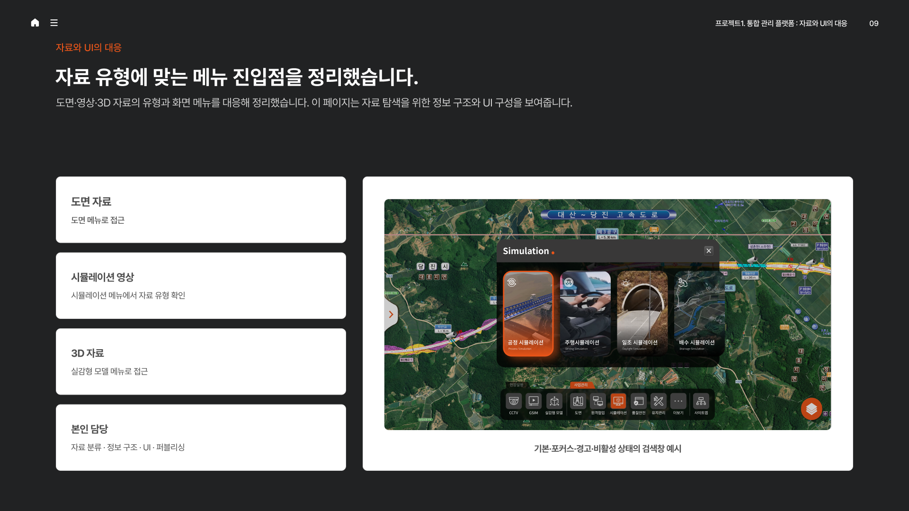
지도·시뮬레이션 화면 아래에 ‘기본·포커스·경고·비활성 상태의 검색창 예시’가 남았습니다. 이미지와 다른 캡션입니다.
작업
오른쪽 하단 캡션만 교체합니다. 도면·영상·3D에 대한 설명은 메뉴 진입점 수준에서 유지합니다.
공통 메뉴와 시뮬레이션 자료 유형 선택 화면
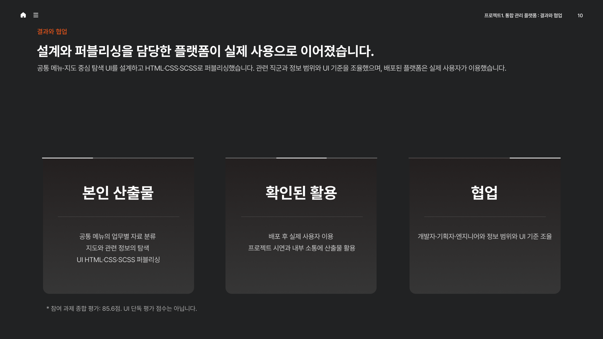
본인 산출물·실제 활용·협업 직군이 구분됩니다. 85.6점은 UI 점수가 아닌 과제 종합 평가라고 명시됐습니다.
작업
85.6점은 핵심 UI 성과가 아니므로 선택적으로 삭제할 수 있습니다. 점수를 유지한다면 실제 평가표를 설명할 수 있을 때만 사용합니다. 협업 사례 한 건의 추가는 선택 보강입니다.
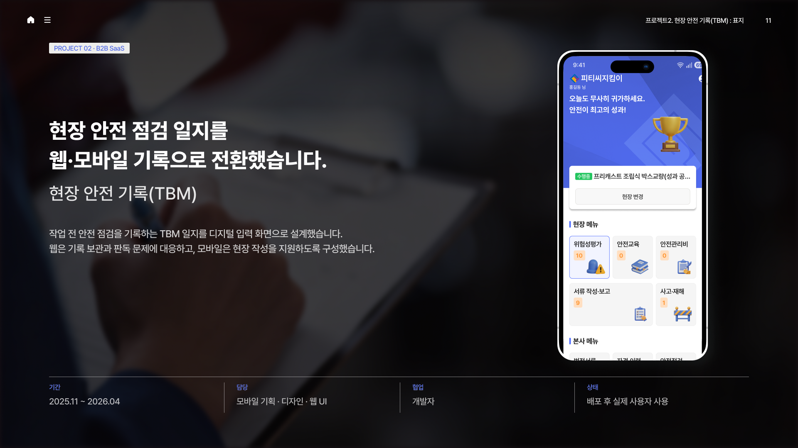
기간·담당·배포 상태는 명확합니다. 상단 B2B SaaS는 현재 자료가 설명하는 업무 서비스보다 운영 방식을 넓게 단정합니다.
작업
상단 분류만 업무 서비스로 바꿉니다. 오른쪽 모바일 목업이 잘려 보이는 부분도 이미지 프레임을 확인합니다.
PROJECT 02 · B2B WORKFLOW · WEB / MOBILE
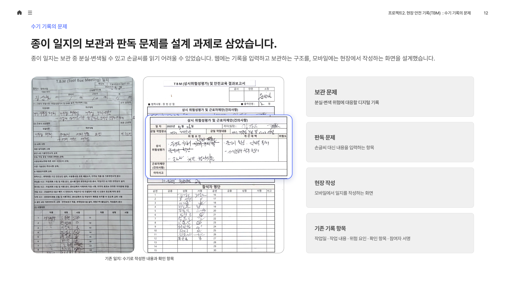
ERP 문구 오복사는 해결됐습니다. 종이 일지의 이름·서명·협력사 식별 정보는 아직 보입니다.
작업
원본 사진에서 사람 이름·서명·회사 및 현장 식별 정보를 제거한 자료로 교체합니다. 가능하면 작업일·내용·위험 요인·확인 항목만 발췌해 오른쪽 설계 과제와 대응시킵니다. 모자이크로 읽히지 않게 한 뒤 내보낸 이미지를 다시 확대 확인합니다.
기존 일지의 핵심 항목: 작업일 · 작업 내용 · 위험 요인 · 확인 항목 · 참여자 서명 개인 식별 정보는 제출용 자료에서 익명화
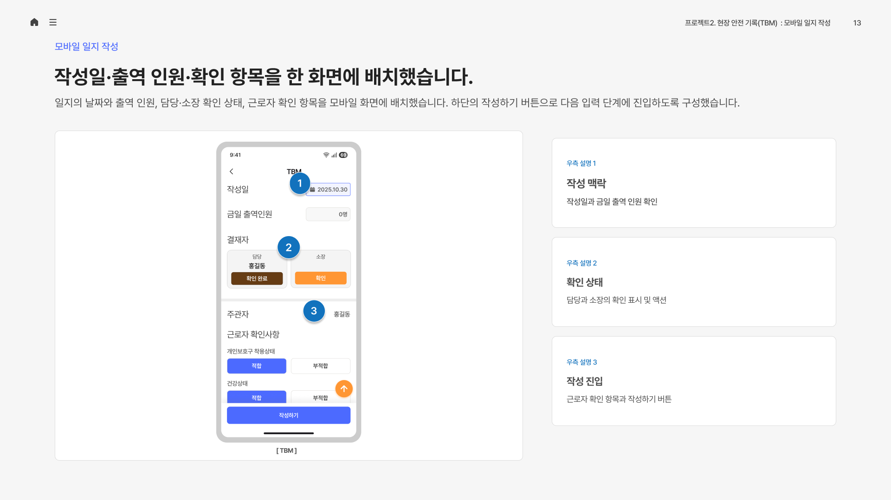
일지 설명과 실제 화면은 맞습니다. 화면 작성일 2025.10.30은 표지 시작일 2025.11보다 빠릅니다. 날짜 관계는 아직 설명되지 않았습니다.
작업
실제 작업기간을 확인해 표지 기간을 고치거나, 예시 날짜였음을 확인한 경우 실제 앱·디자인 원본의 날짜를 해당 작업기간 안으로 바꾸고 재캡처합니다. 예시 날짜라고 임의로 단정하지 않습니다. UI의 ‘결제자’는 문맥상 ‘결재자’로 수정합니다.
오른쪽 소제목: 1 작성 맥락 / 2 확인 상태 / 3 작성 진입 UI 항목: 결재자
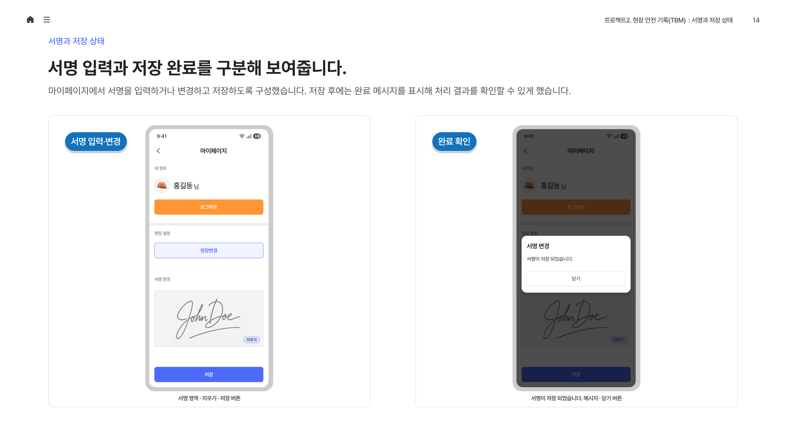
마이페이지의 서명 입력·변경과 저장 완료 화면이 명확히 구분됐습니다.
작업
완료 메시지의 ‘서명이 저장 되었습니다.’를 ‘서명이 저장되었습니다.’로 정리하면 됩니다. 일지 전체 저장 완료로 확대하지 않습니다.

산출물·배포 후 실사용·개발자를 통한 의견 전달 경로가 구분됩니다. 어제의 ‘협업 근거’ 과장은 정리됐습니다.
작업
상세 피드백이나 효과를 새로 만들지 않습니다. 큰 가로 카드의 배치 변경은 선택 사항입니다.

제공 형식이 PDF로 바뀌어 웹 설계안이 미사용이라는 사실을 명확히 밝혔습니다. 기간은 최신 1011의 2025.11–2026.04를 웹에도 반영했습니다.
작업
대시보드의 이름·근로 상태가 실제 직원 데이터라면 익명화한 화면으로 교체합니다. 오른쪽 캡처가 페이지 경계에서 잘리는 배치도 조정합니다. 어제와 달라진 기간은 이번 원본을 기준으로 사용했으며 별도 재직 기록을 검증한 것은 아닙니다.
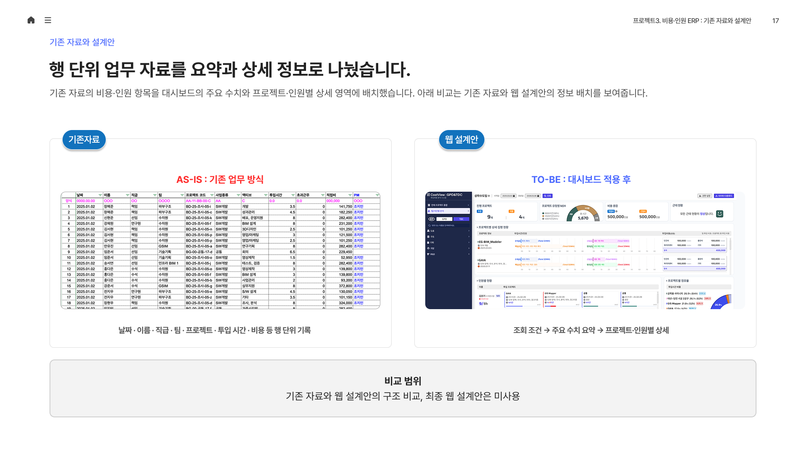
구조 비교 설명은 명확해졌지만 ‘TO-BE : 대시보드 적용 후’는 실제 적용·운영한 것처럼 읽힙니다. 아래 최종 미사용 설명과 충돌합니다. 왼쪽 원장에 이름·직급·팀·투입 시간·비용이 그대로 보입니다.
작업
TO-BE 제목을 교체하고 원장·대시보드의 식별 정보를 익명화합니다. 구조 비교는 유지하며 실제 적용 전후 효과로 소개하지 않습니다.
TO-BE : 비용·인원 대시보드 설계안 비교 범위: 기존 업무 자료와 웹 설계안의 구조 비교 · 최종 웹 설계안 미사용
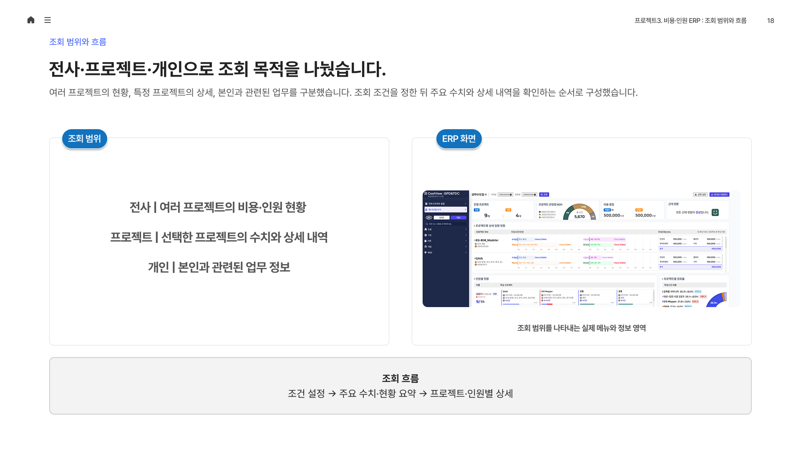
전사·프로젝트·개인 조회 목적과 조회 흐름 설명은 맞습니다. 동일한 전체 대시보드가 반복돼 실제 메뉴가 작습니다.
작업
오른쪽 메뉴와 요약·상세 영역을 확대합니다. 세 범위별 화면을 모두 보여준 것은 아니므로 ‘조회 범위 관련 메뉴와 요약·상세 영역’으로 캡션을 좁힙니다.
조회 범위 관련 메뉴와 요약·상세 영역
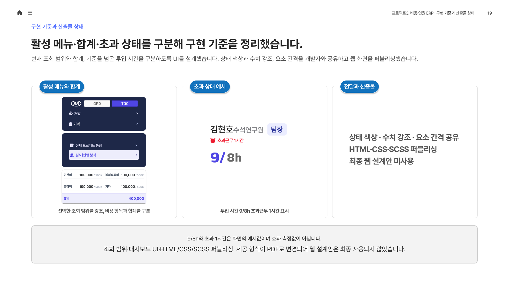
전달·퍼블리싱·최종 미사용은 잘 구분됐습니다. 9/8h의 분모를 설명하지 않았고 사람 이름과 근로 상태가 보입니다.
작업
실명 대신 확인된 시연 인물로 교체하거나 이름을 제거합니다. 예시라는 사실을 유지하며 시간을 풀어 씁니다.
투입 시간 9시간 / 기준 8시간 · 초과 1시간 표시 수치는 상태 표현을 위한 화면 예시이며 효과 측정값이 아닙니다.
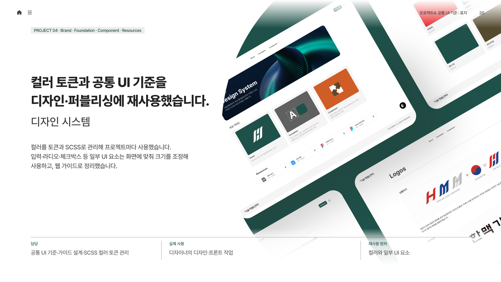
디자이너의 디자인·프론트 작업, 컬러와 일부 UI 요소라는 실제 재사용 범위가 명확합니다.
작업
부제 ‘디자인 시스템’을 ‘공통 UI 기준·웹 가이드’로 맞추면 본문의 증거 범위와 더 잘 연결됩니다. 전체 디자인 시스템 구축을 새 주장으로 추가할 필요 없습니다.
공통 UI 기준·웹 가이드
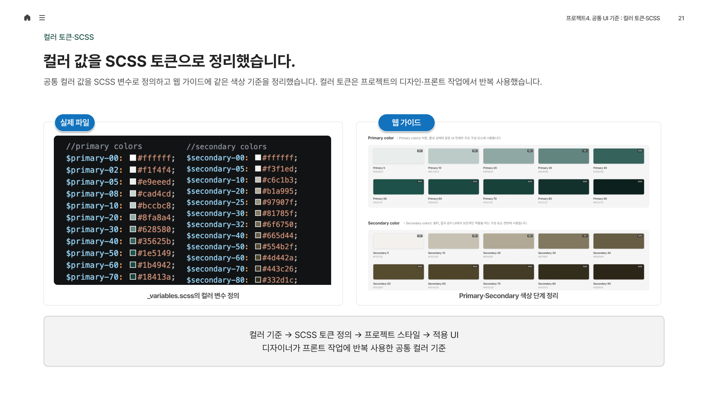
오른쪽을 실제 적용 코드 대신 컬러 가이드로 바꾼 점은 맞습니다. 아래 4단계 흐름에는 프로젝트 스타일·적용 UI가 있으나 해당 자료는 현재 화면에 없습니다.
작업
하단을 현재 제시한 두 자료의 관계로 좁힙니다. 실제 참조 코드가 확보되면 프로젝트 스타일·적용 UI를 증거와 함께 추가합니다.
SCSS 컬러 변수 정의 ↔ 웹 가이드의 동일 색상 기준 디자이너의 디자인·프론트 작업에서 재사용한 공통 컬러 기준
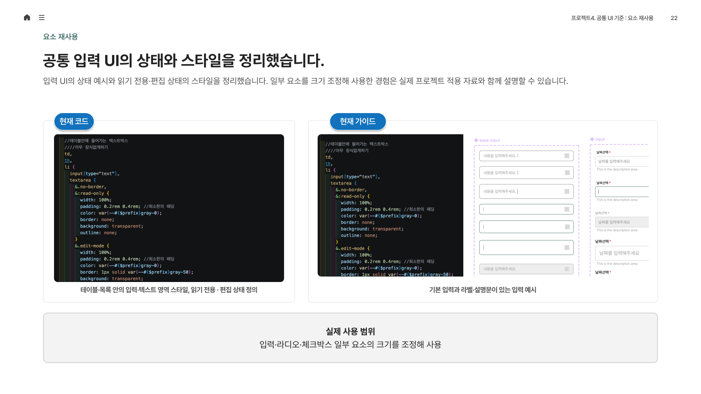
제목은 실제 입력 UI에 맞게 수정됐습니다. 설명에 ‘실제 프로젝트 적용 자료와 함께 설명할 수 있습니다’라는 검토 문장이 남아 있고 오른쪽에는 왼쪽 코드가 반복됩니다. 기본 입력·라벨 입력은 작고 일부가 잘립니다.
작업
설명문을 완성된 제출 문장으로 바꿉니다. 오른쪽의 중복 코드를 빼고 입력 가이드만 확대하며 상태·라벨이 프레임 안에 들어오는지 확인합니다. 크기 조정 전후를 증명하려면 실제 적용 자료가 별도로 필요합니다.
입력 UI의 상태 예시와 테이블·목록 안의 읽기 전용·편집 스타일을 정리했습니다. 일부 입력·라디오·체크박스 요소는 화면에 맞춰 크기를 조정해 사용했습니다. 왼쪽: 읽기 전용·편집 상태의 SCSS 스타일 오른쪽: 기본 입력과 라벨·설명문이 있는 입력 예시
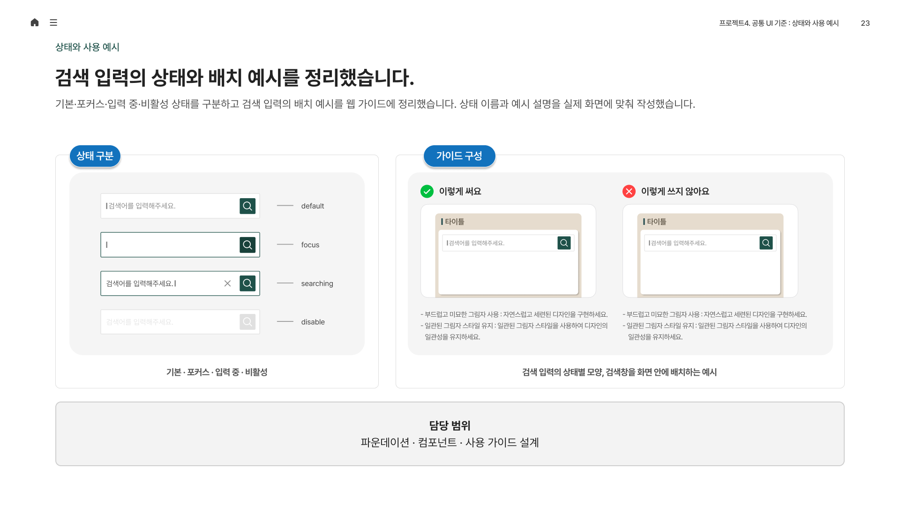
본문·하단은 입력 중·비활성으로 바뀌었지만 실제 이미지에는 searching·disable이 남았습니다. Do/Don’t 아래 두 설명은 여전히 동일합니다.
작업
이미지 원본의 searching→typing, disable→disabled 또는 상태 4개 전체를 한글로 바꿉니다. Do/Don’t 대신 ‘검색 입력 배치 예시’ 한 개만 남기고 설명을 한 번만 씁니다.
상태: 기본 · 포커스 · 입력 중 · 비활성 배치 예시: 검색 입력을 콘텐츠 영역 상단에 배치하고 주변 입력·내용 영역과 구분했습니다. 담당: 파운데이션 · 컴포넌트 · 사용 가이드 설계

회의실 예약·근태 신청의 설명과 미배포·팀 내부 확인 상태가 명확합니다. 본인 담당이 팀 결과와 구체적으로 분리되지는 않았습니다.
작업
추가 자료 없이 사용할 수 있는 범위는 ‘디자이너 팀에서 기획·UI·퍼블리싱 참여’입니다. 실제 본인 담당 화면이 확인될 때만 별도 표시하고 단독 설계로 바꾸지 않습니다. 화면 날짜 2024.05.03과 웹의 작업기간은 예시 여부를 확인하면 좋습니다.

AI 보조 구현·사용자 평가 미실시·작업 생성 표기는 잘 정리됐습니다. 보드에는 test:1·sss·ddddd가 남아 있고 작업 생성 화면은 입력값이 빈 상태입니다.
작업
실제 앱에서 test 컬럼과 의미 없는 카드를 정리하고 작업 제목·설명·담당·상태·일정을 의미 있는 시연 값으로 입력한 뒤 재캡처합니다. 보드와 생성 화면에 같은 작업이 연결되면 좋습니다. 화면을 이미지로만 고쳐 실제 구현 결과로 소개하지 않습니다.
시연 데이터 예시 제목: TBM 일지 모바일 화면 정리 설명: 작성일·출역 인원·확인 상태와 작성하기 버튼 배치 담당자: 디자이너 A 상태: 진행 중 일정: 실제 시연에서 설정한 시작일·종료일 현재 컬럼은 작업 분야와 상태가 혼재되어 있으므로 검증된 작업 단계 체계라고 소개하지 않습니다.
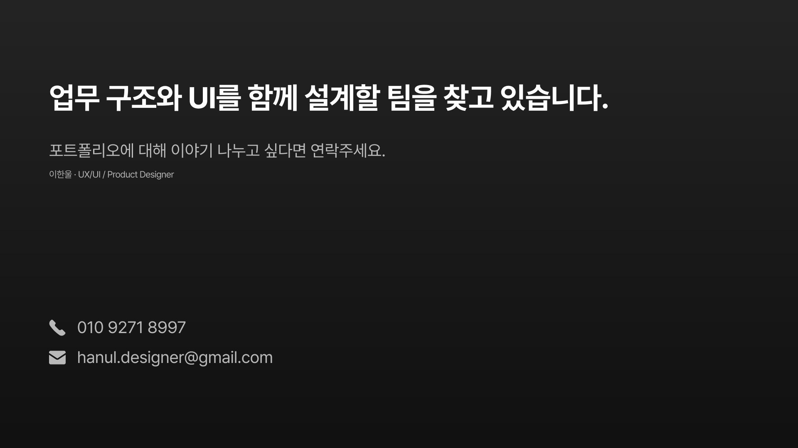
이메일과 전화가 올바른 아이콘과 함께 표시됐습니다. 이전 이메일 누락은 해결됐습니다.
작업
‘연락주세요’를 ‘연락 주세요’로 정리합니다. 웹 주소를 추가하는 것은 선택 사항입니다. 최종 PDF 내보내기 후 이메일·전화·홈·목차 링크를 클릭해 확인합니다.
포트폴리오에 대해 이야기 나누고 싶다면 연락 주세요.